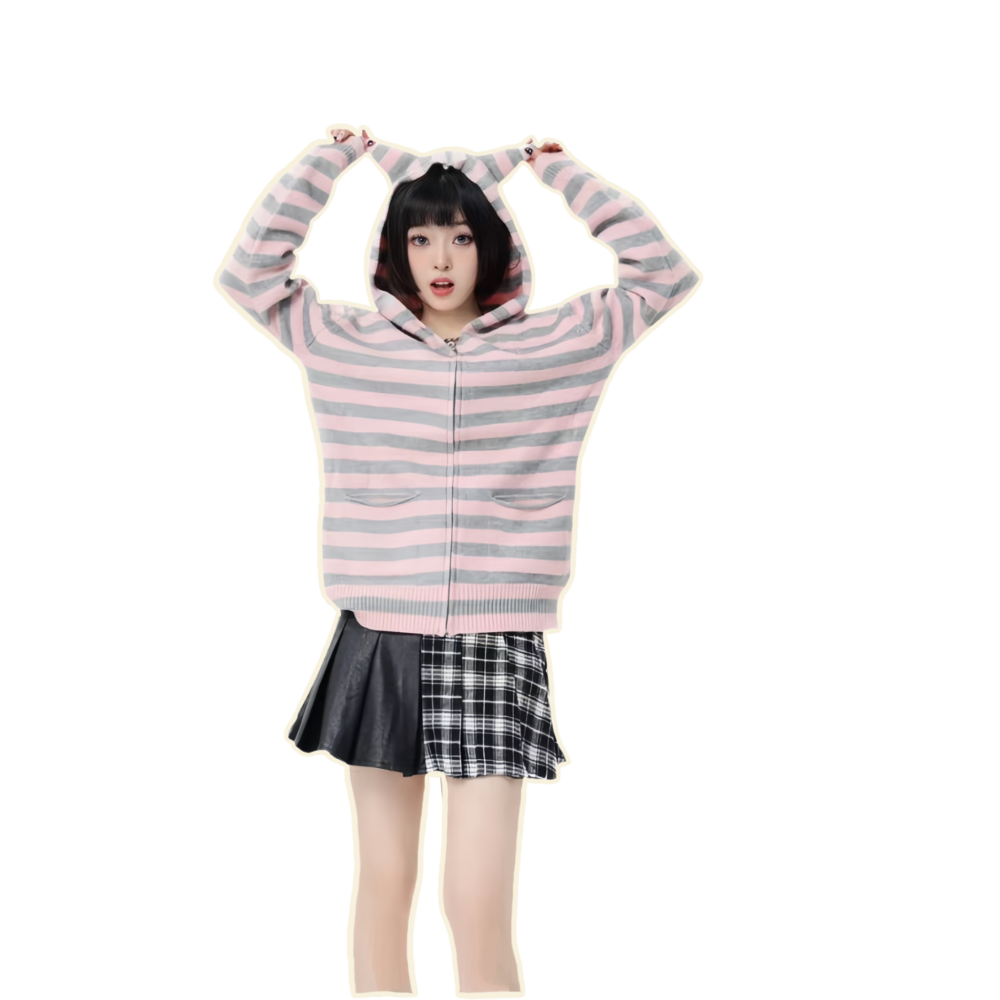

Black and white pairing is the most classic. The combination of black and white is classic and timeless. They never go out of style and can convey a sense of sophistication and simplicity. At the same time, the stark contrast between black and white creates a visually striking effect. This high contrast draws attention to specific elements and makes them stand out. Black and white is free of color distractions, and the absence of color simplifies the visual experience. It leads to cleaner, more direct designs with less visual clutter. Perfect for plain wear at home in your spare time.

Stripes add visual interest and variety to clothing, enhancing its overall appearance. Stripes are a classic and versatile pattern that can be adapted to various fashion trends, making them enduring and widely accepted. Whether it's casual wear, formal attire, or athletic apparel, stripes can be incorporated into a wide range of clothing styles. Also, Vertical stripes, in particular, can create an illusion of height, making the wearer appear taller and slimmer. What's more, Well-placed stripes can emphasize or de-emphasize certain areas of the body, contributing to a more flattering silhouette.
Pink is often associated with softness, femininity, and romance. Wearing pink can evoke a gentle and pleasant aesthetic, which extremely suitable for sleep wear at home. Pink comes in various shades, from pastel tones to bolder hues, providing versatility in fashion choices. Additionally, Pink is a versatile color that can be incorporated into various fashion trends and styles.
Grey is a neutral color that pairs well with a wide range of other colors. It is a timeless and classic color that doesn't go out of style, and tends to have a sophisticated and understated aesthetic. Lighter shades of grey can reflect sunlight and help keep you cooler in warm weather, while darker shades can absorb heat and provide a bit of warmth in cooler temperatures. This makes grey a versatile choice for home wearing. Last but not the least, Lighter shades of grey can be forgiving when it comes to hiding minor stains or dirt, making them a practical choice for everyday wear.
The extended collar provides extra coverage for the neck, making turtleneck sweaters an excellent choice for colder weather. They can help keep warm and cozy by providing an additional layer around the neck. Turtleneck sweaters have been a fashion staple for decades. They have a timeless and classic appeal that transcends trends, making them a reliable choice for a sophisticated and stylish look. While turtlenecks can be dressed up, they also work well for casual and relaxed settings. Paired with jeans or casual pants, which provide a comfortable and laid-back vibe.